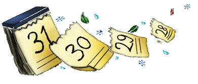
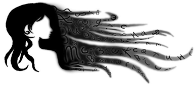
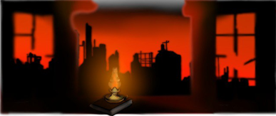

Мозаика букв

Первый поэтический сборник Эммы Натали Розентест, известной в интернете под ником мадам в Шапокляк. Каждое стихотворение — это фрагмент внутреннего мира, выложенный из букв, пауз и дыхания. Темы — эмоции, чувства, память, город, одиночество, ритм жизни и голос автора.
1. КАЛЕНДАРЬ
Поэтические заметки времени, ритма, памяти. Здесь строки идут как дни, а паузы — как дыхание между событиями.
2. МОЗАИКА БУКВ
Фрагменты внутреннего мира, голос автора, игра с формой и смыслом. Здесь буквы складываются в образы, а образы — в чувства.
3. СЕГОДНЯ БЫЛА ВОЙНА
Тексты, в которых звучит тревога, боль и попытка осмысления. Поэзия как свидетельство, как голос, как память.
Сборник доступен в печатной версии. В будущем планируется дополнение аудио и визуальными материалами для каждого раздела.